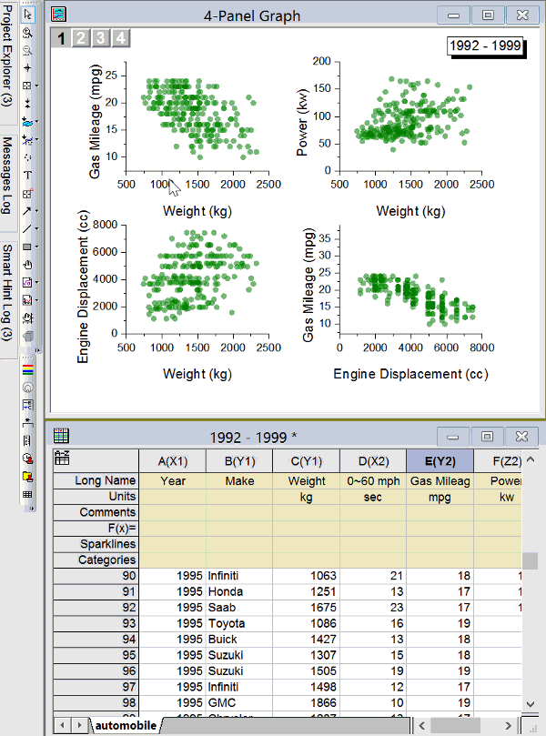

highlight-data-points-in-multiple-graphs-simultaneously
Last Update: 6/5/2018
Coming in Origin 2019 ...
Using the Data Highlighter tool (Tools toolbar), you can highlight data points in all open graph that originate from same row of worksheet.

Keywords:cluster, select, worksheet data